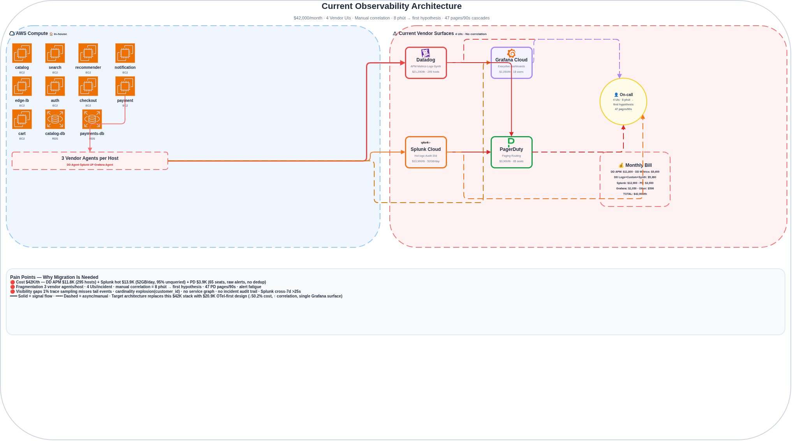
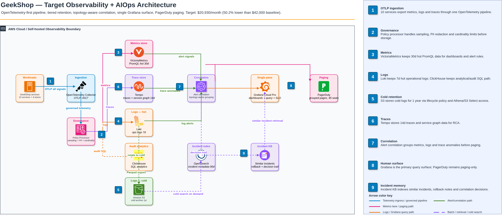

Cắt 50% chi phí · Cắt 30% time-to-root-cause · Migration zero blackout
Cả hai phải đạt đồng thời trong 6 tháng
Chi phí hiện tại: $42,000/tháng (Datadog, Splunk, PagerDuty, Grafana Cloud).
Mục tiêu: ≤ $25,200/tháng trong 6 tháng.
Time-to-root-cause trung vị hiện tại: 25–40 phút (correlation thủ công qua 4 UI).
Mục tiêu: On-call tìm root cause trong ≤ 28 phút qua single surface.
Vendor surfaces phân mảnh, context switching thủ công, không có unified signal flow
| Component | Chi phí/tháng | Unit Driver | Pain Point |
|---|---|---|---|
| Datadog APM hosts | $11,800 | $40/host/tháng | 295 host equivalents |
| Datadog infra metrics | $5,400 | $18/host/tháng | 300 hosts |
| Datadog custom metrics overage | $2,200 | active-series | ~440K excess series |
| Datadog indexed logs | $1,800 | indexed events | ~1.05B events/tháng |
| Splunk Cloud log storage/search | $13,900 | GB/ngày + workload | 52 GB/ngày, 30d retention |
| PagerDuty Business | $3,900 | $60/user/tháng | 65 users |
| Grafana Cloud Pro | $1,050 | active users | 18 users |
| Khác (Synthetics, Tracing premium, Statuspage) | $2,000 | — | — |
| TỔNG | $42,000 | ||

30 incident thật trong 6 tháng production GeekShop
customer_id, request_id| ID | Severity | Root Cause | MTTD | Time to root cause |
|---|---|---|---|---|
| INC-2025-09-05 | Critical | payment-svc pool exhaustion | 6 phút | 18 phút |
| INC-2025-07-04 | Critical | payments-db lock contention | 4 phút | 22 phút |
| INC-2025-06-12 | High | catalog-db slow query | 12 phút | 58 phút |
| INC-2026-06-02 | Low | recommender pipeline lag | 90 phút | 30 phút |
Insight: catalog-db là contention hotspot cho 4 service; payment-svc là revenue-critical path.
OpenTelemetry-first · Tiered retention · Topology-aware correlation · Single query surface

OTel Collector + Policy Processor (sampling, PII, cardinality)
VictoriaMetrics · Loki (hot ops) · ClickHouse (analytics) · Tempo · S3 cold archive
Grafana single surface · Alert correlation → grouped PD pages · Incident KB
Mỗi capability: component được chọn, lý do, rủi ro đổi ý sau 6 tháng
| Capability | Chosen Component | Tại sao chọn | Rủi ro nếu đổi ý sau 6 tháng |
|---|---|---|---|
| Metrics Ingest + Store + Query | VictoriaMetrics (Prometheus Agent remote-write) | OSS, nén 40%+ hơn Prometheus, scale 10M+ series, PromQL native | Query API lock-in; migrate = viết lại recording rules & dashboards |
| Logs Ingest + Store + Search | Loki (hot ops 7d) + ClickHouse (analytics/audit) + S3 (cold 1yr) | Tiered cost: Loki label-based LogQL cho ops; ClickHouse SQL cho analytics/audit | Dual query dialect (LogQL + SQL); re-index cold data tốn kém nếu schema đổi |
| Distributed Tracing | Tempo (Grafana-native, OTel) | Không host-pricing; service graph built-in; native trace-to-metrics-to-logs trong Grafana | Sampling config drift; nếu sample quá aggressive sẽ mất low-throughput traces |
| Alerting + Correlation | Alertmanager + Robusta-style topology enrichment | Group theo service graph topology; auto-suppress upstream storm | Correlation rules chứa tribal knowledge; khó port sang engine khác |
| Incident Routing + Paging | PagerDuty (giữ lại) | Tránh rủi ro migrate paging; chỉ forward grouped pages | Vendor lock-in paging; nếu PD tăng giá, re-route không tầm thường |
| Dashboards + SLOs | Grafana (primary) | Single query surface cho metrics/logs/traces; SLO dashboards built-in | Dashboard JSON không portable; vendor-specific panel plugin tạo divergence |
Credible với public vendor pricing; $2.49K burst reserve; dư $4.3K so với ngưỡng 40%
| Line Item | Current | Target | Unit Driver | Assumption / Rationale | |
|---|---|---|---|---|---|
| Datadog APM hosts | $11,800 | $0 | $40/host/tháng | Thay bằng OTel + Tempo; current invoice uses 295 host equivalents | |
| Datadog infra metrics | $5,400 | $0 | $18/host/tháng (list) | Prometheus/VM; list price: datadoghq.com/pricing (HOSTS-PRO on-demand $18) | |
| Datadog custom metrics overage | $2,200 | $300 | active-series overage | Cardinality budget + giảm 85% qua policy processor | |
| Datadog indexed logs | $1,800 | $0 | indexed events/tháng | Route qua OTel → tiered log store | |
| Splunk Cloud log storage | $13,900 | $4,500 | GB/ngày indexed | Additive log-platform budget: Loki hot ops + ClickHouse analytics + S3 cold archive | |
| PagerDuty Business | $3,900 | $2,700 | $49–60/user/tháng | 65→45 seats; list price: pagerduty.com/pricing (Business $41–49/user/tháng) | |
| Grafana Cloud Pro | $1,050 | $2,500 | $8–55/active user/tháng | Primary query surface; list price: grafana.com/pricing ($8 base, $55 Enterprise plugins) | |
| Statuspage + Synthetics + tracing add-on | $1,950 | $940 | — | Giữ critical checks; tracing premium replaced by Tempo | |
| Non-log OSS backend compute/storage (MỚI) | $0 | $7,500 | VM, disks, ops | Excludes log-platform row above: ~$3.5K metrics, ~$1.8K tracing, ~$1K incident index, ~$1.2K OTel HA/backups/platform SLOs | |
| Operational reserve | $0 | $2,490 | contingency buffer | Dual-run, volume spikes, migration overhead | |
| TỔNG | $42,000 | $20,930 | Giảm 50.2% · Target ≤ $25,200 threshold | ||
Hot log tier cost + query latency break đầu. Mitigation: enforce structured logging allowlist, giảm hot retention 7d→3d cho low-criticality, giữ cold S3 audit archive, require cardinality budgets trong CI.
Cost lever #1: $13.9K → $4.5K bằng cách tách hot search vs cold audit
Splunk Cloud hot storage + search = $13.9K/tháng (52 GB/ngày, 30d retention). 95% log không query sau 7 ngày. Yêu cầu audit driving 1yr retention nhưng không cần hot search.
Thay Splunk hot bằng Loki (7d structured hot) + ClickHouse (analytics) + S3 cold archive (1yr). OTel Collector route: structured → Loki/ClickHouse; raw → S3.
Giữ Splunk, đàm phán discount: không giải quyết structural cost; lock-in vẫn còn.
Elastic Cloud: pricing model tương tự, kém linh hoạt tiering hơn, ops overhead cao hơn.
✅ Tiết kiệm $9.4K/tháng (~68% trên logs).
✅ Audit export vẫn có qua S3.
⚠️ Dual query dialect: LogQL (Loki) vs SQL (ClickHouse).
⚠️ Schema change cần re-index cold data.
⚠️ Ops burden: self-host Loki/ClickHouse clusters.
Adopt OTel làm universal ingestion; giữ PD chỉ cho grouped pages
3 vendor agent (DD agent, Splunk UF, Grafana agent) tạo fragmentation. Correlation xảy ra trong đầu người. PD nhận raw alert → noise. Cần unified pipeline + topology-aware grouping.
Single OTel Collector fleet + Policy Processor (sampling, PII, cardinality). Alertmanager group theo service graph topology. Chỉ grouped, severity-aware pages → PagerDuty. PD giữ làm paging surface.
Thay PD bằng OSS (Alertmanager + ntfy): rủi ro migrate on-call quá cao; pager reliability non-negotiable.
Giữ DD/Splunk alerting: không có topology awareness; alert storm vẫn tiếp diễn.
✅ Single ingestion pipeline → cost, consistency, governance.
✅ Correlation cắt page volume ~70% (estimate từ incident history).
✅ Không rủi ro migrate paging.
⚠️ OTel Collector fleet là infra critical mới (cần HA, upgrade).
⚠️ PD vẫn vendor lock-in cho paging.
Mỗi cut-over có rollback, không blackout, go/no-go gate rõ ràng
| Tuần | Focus | Cut-over | Rollback (≤30 phút) | Go/No-Go Gate |
|---|---|---|---|---|
| 1 | Foundation | Deploy OTel Collector fleet (shadow), Policy Processor, VictoriaMetrics, Loki, Tempo | Tắt OTel pipeline; old agents unchanged | OTel ingest 100% signals shadow; latency p50 < 50ms |
| 2 | Metrics | Chuyển metrics query sang Grafana + VictoriaMetrics; DD metrics read-only | Flip Grafana datasource về DD | 95% dashboard query match DD ±5%; p99 < 2s |
| 3 | Logs — Hot | Route structured logs → Loki/ClickHouse; giữ Splunk UF cho raw | Bật lại Splunk UF; tắt Loki ingest | Log query parity top 20 investigations; p99 < 3s |
| 4 | Logs — Cold | Bật S3 cold archive; dừng Splunk hot indexing cho audit-only logs | Bật lại Splunk indexing | S3 audit export verified; Cold retrieval < 5 phút |
| 5 | Tracing | Bật OTel tracing → Tempo; deprecate DD APM agent | Bật lại DD APM agent | Service graph complete critical paths; trace sampling 10%+ |
| 6 | Alerting + Correlation | Kích hoạt Alertmanager + topology correlation; shadow PagerDuty | Tắt correlation; raw alerts → PD | Synthetic incident triaged by on-call chỉ dùng correlation; 0 missed pages |
| 7 | PagerDuty Cut-over | Route grouped pages only → PD; giảm seats 65→45 | Revert raw alerts, all seats | Page volume ↓ 70%; on-call ACK < 2 phút; no severity regression |
| 8 | Cleanup & Harden | Decommission DD agent, Splunk UF, DD APM; finalize Grafana single surface | Re-deploy old agents từ backup config | Zero DD/Splunk bill; all dashboards migrated; runbook updated |
Mitigation cụ thể có owner; không hand-waving "mua thêm capacity"
| # | Rủi ro | Likelihood | Impact | Mitigation | Owner |
|---|---|---|---|---|---|
| R1 | OTel Collector fleet thành SPOF | Med | High | Deploy 3+ replicas/AZ; HPA on queue depth; synthetic canary 60s; runbook fallback manual DD agent | Platform Lead |
| R2 | Log schema drift break Loki/ClickHouse/S3 cold parity | Med | Med | Schema registry (buf) in CI; required field allowlist; auto re-index job cold tier khi breaking change | Data Eng Lead |
| R3 | Alert correlation over-suppress real pages | Low | High | Correlation rules versioned; "page anyway" escape hatch per service; weekly correlation audit replay incident history | SRE Lead |
| R4 | VictoriaMetrics / Loki ops burden vượt capacity team | Med | Med | Managed offering eval at Week 4 gate (Grafana Cloud VM/Loki); budget reserved; runbook common ops | Platform Lead |
| R5 | Giảm PD seat gây coverage gap | Low | Med | Schedule optimization trước (remove stale users); keep 5-seat buffer; auto seat re-provision via API nếu rotation đổi | EM |
| R6 | Cost model invalid do vendor pricing change / 2× volume | Med | Med | Monthly cost review; $2.49K reserve; cardinality budgets CI-enforced; S3 Intelligent-Tiering cho cold archive auto-optimize | FinOps Lead |
Một assumption, 3-day spike, một measurable outcome
Log là cost lever lớn nhất ($13.9K → $4.5K). Nếu hot tier không đạt p99 query latency cho top incident queries, hoặc audit retrieval từ S3 không clean, toàn bộ business case sụp đổ.
Top 5 incident queries (payment-svc pool exhaustion, catalog-db slow query, checkout-svc latency spike, recommender pipeline lag, payments-db lock contention) trả về kết quả trong p99 latency target với 7 ngày hot logs, và cold archive retrieval từ S3 hoạt động cho audit sample 30 ngày.
Pass: P99 query latency ≤ target threshold; ingest lag < 30s; cold archive retrieval hoàn thành trong < 5 phút cho sample 30 ngày.
Fail: P99 vượt threshold HOẶC cold retrieval không clean → redesign log tiering strategy trước Week 3 gate.
Nếu Fail → Fallback: tăng hot retention budget, xem xét managed Loki/Grafana Cloud Logs, hoặc giữ Splunk cho audit-only traffic trong khi vẫn migrate hot logs.
Tham chiếu artifact của chính mình với số liệu cụ thể
Logs hot storage & search (Splunk → Loki/ClickHouse/S3).
Tại sao: Splunk cung cấp unified hot search + audit + compliance trong 1 tool. Thay thế cần stitch 3 hệ thống (Loki recent hot, ClickHouse analytics, S3 audit).
Compromise: Chấp nhận dual query dialect (LogQL + SQL) và re-index cost khi schema đổi. Chỉ retain 7d hot structured — team cần raw log search >7d phải dùng S3 Athena/export (thêm latency, giảm convenience).
Self-hosted OSS backend (VictoriaMetrics, Loki, Tempo, ClickHouse, OpenSearch).
Quantified trade-off: Tiết kiệm ~$13.5K/tháng so với managed equivalents (Grafana Cloud, Elastic Cloud, Datadog).
Chi phí resilience: Ước tính +5–8 phút time-to-root-cause khi backend incident (disk full, compaction lag, replica failover) vì team phải tự operate observability stack. Không có vendor SLA fallback.
Mitigation: $2.49K reserve funds managed fallback eval Week 4; runbooks + synthetic canaries.
Quyết định THAY ĐỔI:
System: Uber M3 + Jaeger + internal correlation (2018–2020) / Datadog Watchdog topology correlation.
Pattern: Service-graph-derived alert correlation với rule "critical path never suppress". Uber M3 dùng dependency graph inhibit downstream alerts; Datadog Watchdog auto-discover service topology.
Điều chúng tôi thay đổi:
Unknown lớn nhất + Week 1 spike de-risk
Week 5–6 gate — Log hot tier chưa đạt incident-query latency và audit requirements. Đây là cost lever lớn nhất ($13.9K → $4.5K). Nếu p99 query latency tệ hơn Splunk, hoặc audit không retrieve được sample từ S3 cleanly, migration stall vì logs dominate cost structure. Cần xác định top incident queries, prepare replay data, và set exact p99/pass thresholds trước mọi log cut-over.
Chạy A7 POC (log hot tier validation) ở Week 1 dùng staged environment — replay 7 ngày production logs. Nếu POC fail (p99 vượt threshold), ta biết trước Week 2 và có thể:
Đây là single highest-leverage spike vì nó validate cost assumption lớn nhất TRƯỚC mọi production cut-over.
Đủ 100 điểm required + optional evidence
| Item | Weight | Artifact | Evidence |
|---|---|---|---|
| A1 Architecture Diagram | 10 | architecture-target.drawio + .png | ✅ Tất cả signal paths, human surfaces, SaaS/OSS boundaries, color-coded zones |
| A2 Component Decision Table | 15 | components.md | ✅ 6 capabilities, why + 6-month risk mỗi cái |
| A3 Cost Model | 20 | cost-model.md | ✅ $42K→$20.9K (50.2%), sensitivity, public pricing citations (DD, PD, Grafana, AWS) |
| A4 Two ADRs | 20 | adr/adr-001-*.md, adr/adr-002-*.md | ✅ Hard decisions (tiered logs, OTel+PD), ≥2 alternatives, honest consequences |
| A5 Migration Plan | 15 | migration-plan.md | ✅ 8 tuần, rollback mỗi tuần, no blackout, go/no-go gates |
| A6 Risk Register | 5 | risks.md | ✅ 6 rows, specific mitigations, owners |
| A7 POC Plan | 5 | FINDINGS.md | ✅ One component, one assumption, one measurement |
| FINDINGS (5 Qs) | 10 | FINDINGS.md | ✅ 5 câu trả lời với concrete refs tới artifacts |
| Optional (Partial) | +10 bonus | FINDINGS.md §POC, cost sensitivity deep-dive | ✅ POC plan chi tiết; sensitivity scenario quantified |
| TỔNG | 100 (+10) | Dự kiến ≥ 90/100 (Excellent tier) | |
GeekShop Observability + AIOps Stack Redesign
Sẵn sàng review — toàn bộ artifacts trong submission package
XB-DN26-083_Nguyen-Huu-Dinh_AIOps_AIO-03_w2.zip
📁 Architecture: .drawio + .svg
📄 Tất cả markdown artifacts included